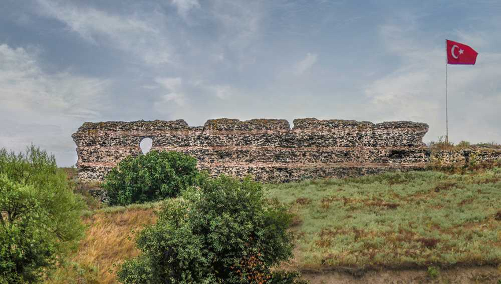
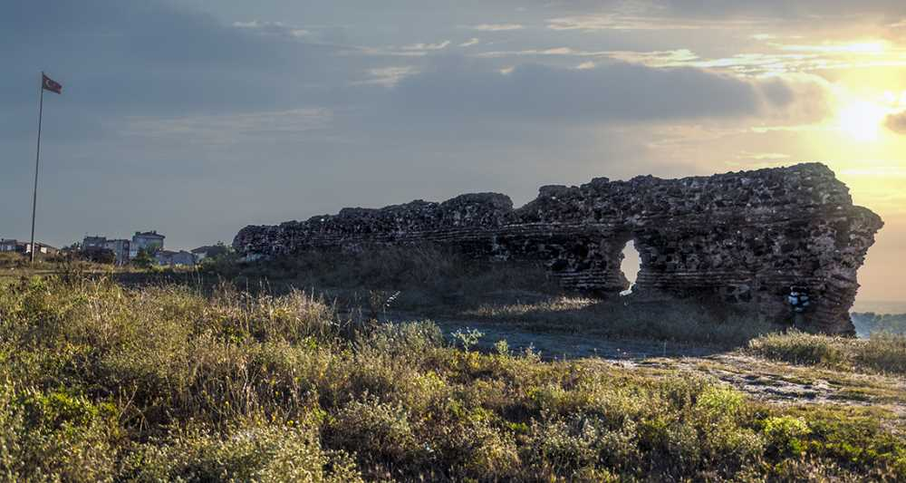

Çorlu Kalesi Hakkında Genel ve Tarihi Bilgiler
Tarihi bir değer taşıyan Çorlu Kalesi, Tekirdağ ilinin Çorlu ilçesinde bulunmaktadır. Günümüze sadece bazı kalıntıları gelebilen Çorlu Kalesi’nin VI. yüzyıla ait olduğu tahmin edilmektedir. Bizans döneminde yapılmış olup; kalenin doğu ve batısı dere yataklarıyla çevrelenmiştir. Sur duvarlarının yuvarlak kulelerle desteklendiği görülen Çorlu Kalesi, kesme taş temeller üzerine kurulmuştur. Maalesef müzeye dönüştürülememiş ve bakımları yapılmamıştır. Böyle tarihi ve eski bir kalenin müzeye dönüştürülmemiş olması üzücü fakat hala kalıntıları ve duvarları yerinde duruyor. Ancak sevindirici tarafı şu ki kale için kazı çalışmaları başlamıştır ve bu bilgi yakın zamanda kale ve o zamanki insanlarla ilgili bazı bilgiler edinebileceğimizi gösterir.Adres Bilgileri
Adres: Hıdırağa Mah. Çorlu/TEKİRDAĞ
Çorlu Kalesi ile İlgili Bazı Fotoğraflar
 
Detayli Bilgi
Detaylı Bilgi ve daha fazla fotoğraf için "Türkiye Kültür Portalı" web sayafasına buradan ulaşabilirsiniz.
Sayfama ait bilgiler ve resimler de Türkiye Kültür Portalı web sayfasına aittir.